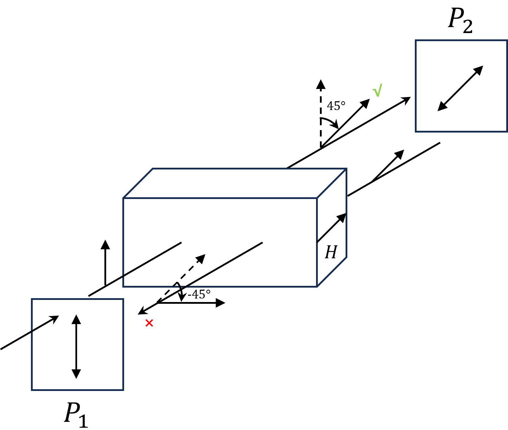

该器件由起偏器P1、Faraday旋转器与检偏器P2组成.
起偏器与检偏器偏振方向之差为45°.
当光沿正方向传播时，经过起偏器P1的作用变成线偏振光.
Faraday旋转器中施加的磁场强度使之达到磁化饱和状态，磁光介质长度经过仔细调整，使之满足条件：
$$V_RM_sd = \frac{\pi}{4}$$沿着光传播方向看去，光偏振方向顺时针旋转\(\frac{\pi}{4}\)，恰可完全透过检偏器P2.
反向传输的光，在经过检偏器P2的作用后形成线偏振光.
由于磁光介质中，磁场方向与光传播方向相反，根据式：
$$V_R(-M_s)d = -\frac{\pi}{4}$$即，沿反向光传输的方向看去，偏振面方向将逆时针旋转\(\frac{\pi}{4}\)，恰与起偏器的偏振方向垂直，因此反向传输光无法通过.